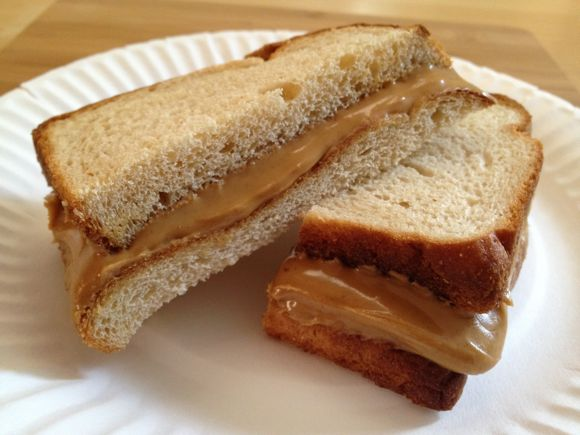

The classic, reliable peanut butter sandwich
No jelly...don't @ me

What you will need:
- The cheapest bread you can find, preferably whole wheat
- Jif peanut butter, crunchy or creamy, your choice
- The ability to eat peanuts
if you can't eat peanuts, sorry, try almond or cashew
these will be more expensive though
- Take sliced bread and place in front of you
- Take out your spoon or knife
- Dip into peanut butter
- Lick peanut butter off spoon or knife
- Wash the spoon or knife unless you live alone and are a little reckless
- Dip back into peanut butter
- Spread the peanut butter on the bread until covered
- Cover both pieces of bread with peanut butter and join them together
The most important step:
-
Cut the sandwich horizontally (yes, I did just say that)
Now, serve with whole milk and proceed to enjoy a classic staple!